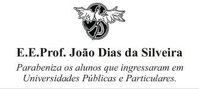
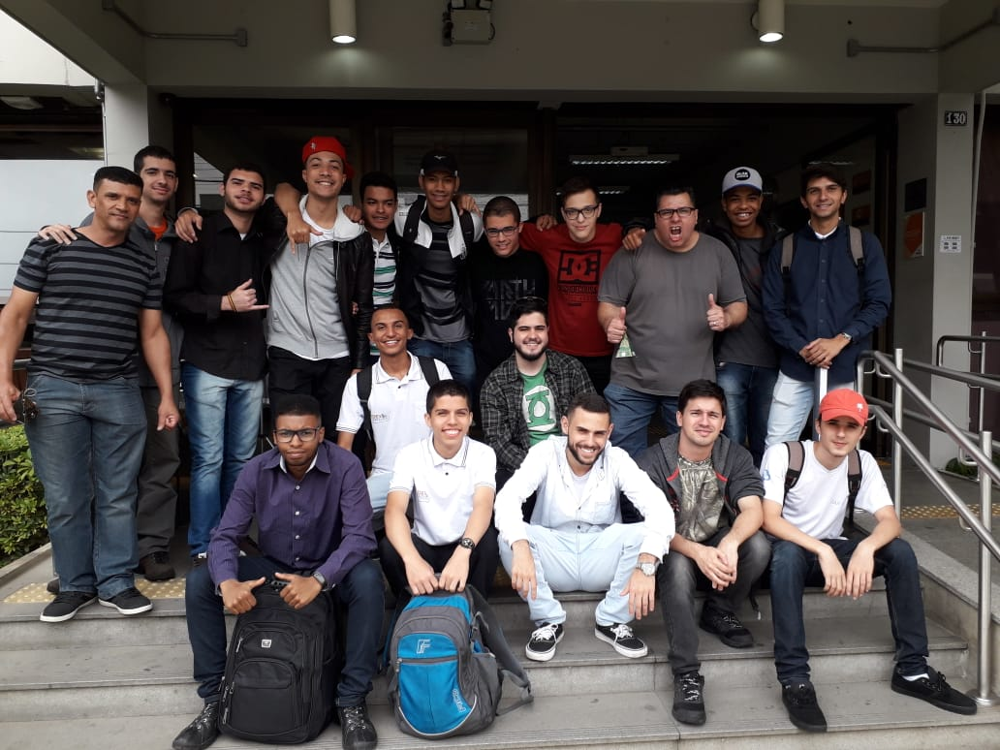
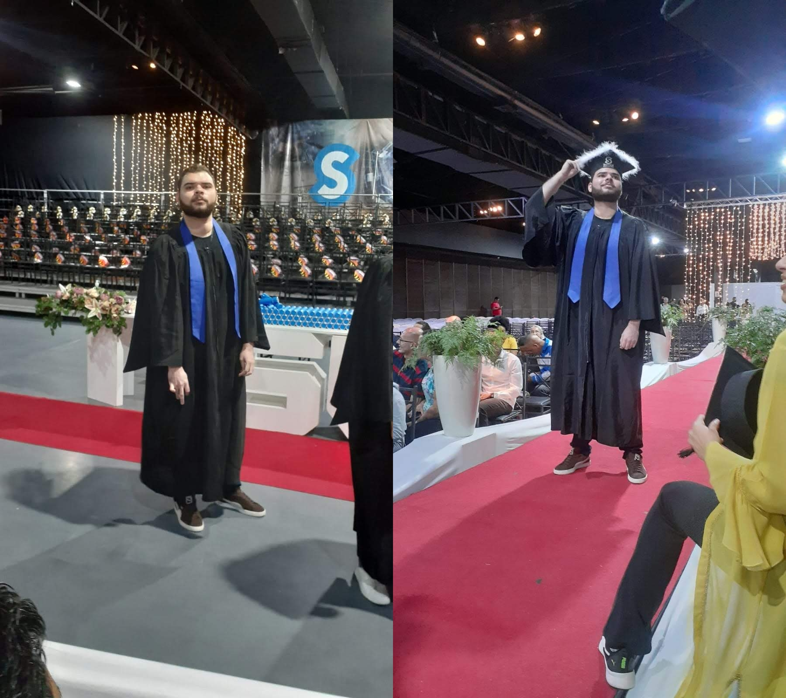

16 de Fevereiro 2015
Ensino Médio

Em 2015 foi onde eu iniciei meu ensino médio em uma escola perto de casa, porém depois de alguns meses acabei me
transferindo para outra escola que acabou sendo melhor até mesmo no ensino e eu percebi isso em poucas semanas de estudo.
Lá consegui me desenvolver muito bem principalmente na parte de comunicação, sempre fui uma pessoa muito tímida só que lá
tinha muitas apresentações e provas orais e isso me ajudou muito.
10 de Julho 2017
Técnico de Informática

Algum tempo depois que terminei meu ensino médio, fiquei sabendo que o Instituto Senac disponibilizava bolsas para
alguns determinados cursos e como eu já gostava de mexer com computador mesmo que naquela época fosse somente para jogar ou ver vídeos
eu já conhecia algumas coisas técnicas então eu acabei unindo o útil ao agradável quando vi que tinha bolsa para Técnico de Informática.
Foram 1 ano e 8 meses de curso e consegui me desenvolver muito bem, essa foi minha turma do curso, foram como uma família durante todo o período
sempre um ajudando o outro. Chegando perto da minha formação do curso eu consegui um estágio na Faculdade Sumaré, onde tinha a chance de obter uma bolsa de estudos.
14 de Janeiro 2019
Faculdade

Entre as graduações que eu podia escolher optei por fazer Ciências da Computação, pois até então não tinha escolhido uma área para me
especializar e pela grade curricular do curso vi que eu poderia seguir para vários caminhos diferentes e assim determinar a minha vida profissional.
Assim como toda nova fase da nossa vida não foi nada fácil, porém nada me fez desistir dessa oportunidade que tive, achei que esses 4 anos iria demorar
muito tempo só que passou num piscar de olhos. Enquanto eu fazia a faculdade também realizava meu estágio em uma das unidades do Centro Universitário Sumaré
onde teve uma duração por 2 anos e infelizmente devido à pandemia acabei perdendo meu estágio.